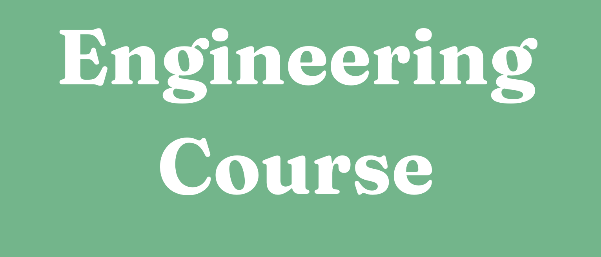

Rendering & Graphics
- OpenGL rendering pipeline (LWJGL)
- Voxel meshing from visible faces
- Textured blocks and UI/menu rendering
- Advanced lighting: shadow mapping

My engineering education combines strong foundations in mathematics, computing and systems with project-based learning. I progressively developed skills in programming languages, compilation, operating systems, optimisation and distributed systems, and applied these methods continuously through my long-term Voxel Project.
Started during TOB (object-oriented programming), my Voxel Project became my long-term engineering sandbox. I used it to apply and consolidate the methods learned in TOB and later in GLS/IDM (software architecture and model-driven thinking). The goal is to build a Minecraft-like game engine in Java using OpenGL (LWJGL), with a focus on modularity, performance and real-time constraints.
Status: ongoing project — continuously improved as I progress through the curriculum.
UI project to visualise the Mandelbrot fractal, combining numerical computation, rendering, and performance considerations.
Implementation of Dijkstra’s shortest path algorithm on directed graphs, focusing on data structures, memory handling, and correctness (distances, predecessors, path reconstruction).
SEC mini-shell and TDL compiler in OCaml, applying processes, parsing, and compilation pipeline fundamentals.
This semester built the mathematical and programming foundations needed for more advanced systems and software engineering projects.
This semester focused on lower-level systems, signal processing and advanced software design, strengthening my ability to reason across abstraction layers and performance constraints.
This semester strengthened my ability to design robust software systems, reason about concurrency and formal models, and solve constrained optimisation problems using both theoretical tools and practical implementations.
From imperative and modular programming (Ada) to functional programming and compiler construction (OCaml), I gained a rigorous understanding of how programs are structured, checked and translated into low-level code.
Through SEC and concurrency coursework, I studied processes, signals, memory, I/O and parallel execution models, and applied these concepts in system-level programming projects.
I explored numerical optimisation and operational research for constrained problems, and discovered distributed systems through practical work on sockets, RMI/JMS and web services.
This website was not developed for mobile devices.